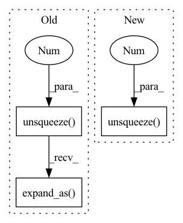

Pattern ID :3208
Before Change
g_t = g_t.unsqueeze(2).expand(g_t.size(0),
g_t.size(1),
inputs.size(1))
sig_t = sig_t.unsqueeze(2).expand_as( g_t)
mu_t_ = mu_t.unsqueeze(2).expand_as(g_t)
j = self.J[:g_t.size(0), :, :inputs.size(1)]
// attention weightsAfter Change
j = self.J[:inputs.size(1)]
// attention weights
phi_t = g_t.unsqueeze(-1) * torch.exp(-0.5 * (mu_t.unsqueeze(-1) - j)**2 / (sig_t.unsqueeze(-1 ) **2))
alpha_t = self.COEF * torch.sum(phi_t, 1)
// apply maskingIn pattern: SUPERPATTERN
Frequency: 3
Non-data size: 3
Instances Fragment ID: 16998586
Project Name: coqui-ai/tts
Commit Name: 0e8881114b7cd223a41a452ea7cf570b56c109a7
Time: 2020-01-10
Author: root@sp-mlc3-5423-0.mlc
File Name: layers/common_layers.py
M Class Name: GravesAttention
N Class Name: GravesAttention
M Method Name: forward(5)
N Method Name: forward(5)
M Parent Class: nn.Module
N Parent Class: nn.Module
M File Name: layers/common_layers.py
N File Name: layers/common_layers.py
M Start Line: 162
M End Line: 176
N Start Line: 346
N End Line: 355
Before Change
g_t = g_t.unsqueeze(2).expand(g_t.size(0),
g_t.size(1),
inputs.size(1))
sig_t = sig_t.unsqueeze(2).expand_as( g_t)
mu_t_ = mu_t.unsqueeze(2).expand_as(g_t)
j = self.J[:g_t.size(0), :, :inputs.size(1)]
// attention weightsAfter Change
j = self.J[:inputs.size(1)+1]
// attention weights
phi_t = g_t.unsqueeze(-1) * torch.exp(-0.5 * (mu_t.unsqueeze(-1) - j)**2 / (sig_t.unsqueeze(-1 ) **2))
// discritize attention weights
alpha_t = self.COEF * torch.sum(phi_t, 1) Fragment ID: 16998585
Project Name: coqui-ai/tts
Commit Name: 5e148038be5971f2c7c811d46a1d7b28c759ecda
Time: 2020-01-09
Author: root@sp-mlc3-5423-0.mlc
File Name: layers/common_layers.py
M Class Name: GravesAttention
N Class Name: GravesAttention
M Method Name: forward(5)
N Method Name: forward(5)
M Parent Class: nn.Module
N Parent Class: nn.Module
M File Name: layers/common_layers.py
N File Name: layers/common_layers.py
M Start Line: 162
M End Line: 176
N Start Line: 162
N End Line: 174
Before Change
// We use the same vector as both a query and a key.
assert int(buckets.shape[1]) == self.n_hashes * seqlen
ticker = torch.arange(self.n_hashes * seqlen, device=device).unsqueeze(0).expand_as( buckets)
buckets_and_t = seqlen * buckets + (ticker % seqlen)
buckets_and_t = buckets_and_t.detach()
// Hash-based sort ("s" at the start of variable names means "sorted")After Change
total_hashes = self.n_hashes + self.n_local_attn_hashes
ticker = torch.arange(total_hashes * seqlen, device=device).unsqueeze(0 ) .expand_as(buckets)
buckets_and_t = seqlen * buckets + (ticker % seqlen)
buckets_and_t = buckets_and_t.detach()
Fragment ID: 16998584
Project Name: lucidrains/reformer-pytorch
Commit Name: 4017831b71f1807ce6e82b28d63eae6bce6dcf7b
Time: 2020-03-09
Author: lucidrains@gmail.com
File Name: reformer_pytorch/reformer_pytorch.py
M Class Name: LSHAttention
N Class Name: LSHAttention
M Method Name: forward(6)
N Method Name: forward(6)
M Parent Class: nn.Module
N Parent Class: nn.Module
M File Name: reformer_pytorch/reformer_pytorch.py
N File Name: reformer_pytorch/reformer_pytorch.py
M Start Line: 186
M End Line: 352
N Start Line: 189
N End Line: 361